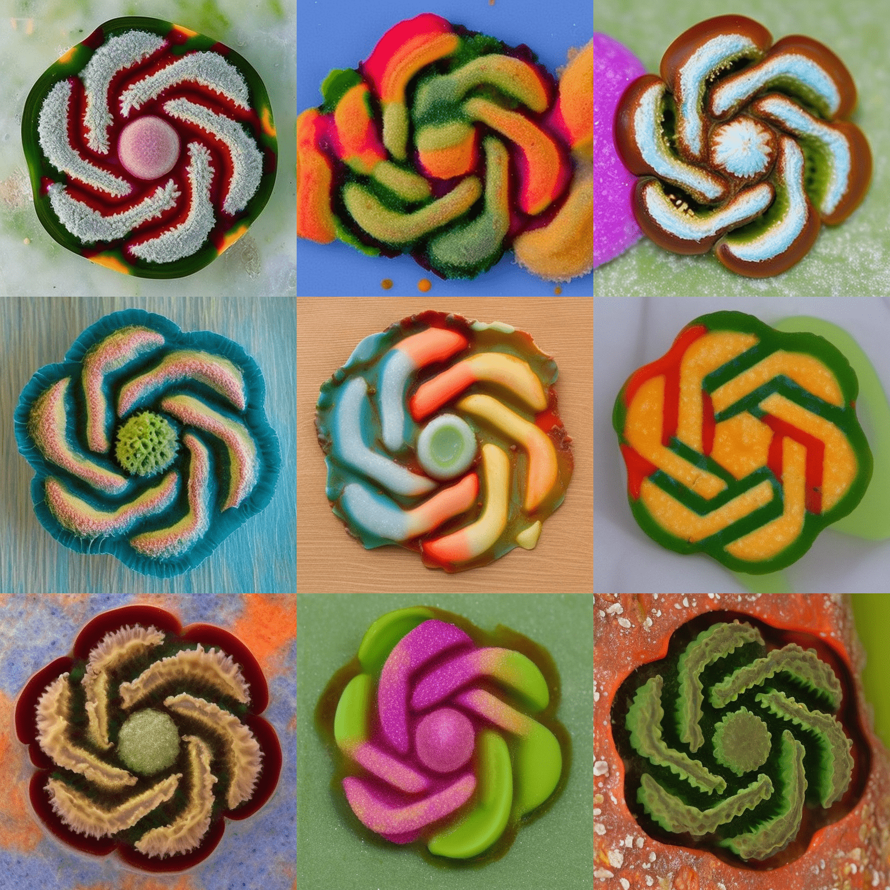

FINMARK — Alberta Fish ID
An offline field guide and photo quiz for learning to identify Alberta fish.
July 2026 · fish · field guide · quiz · offline
Field notes from the workbench
Small tools, interactive experiments, and presentations—each built to stand on its own.
An offline field guide and photo quiz for learning to identify Alberta fish.

An interactive presentation about using large language models, with visual explanations and practical examples.
Empty your head, then see the shape of things.
A detailed archive of Gavin Guinn's experience, technical work, education, and presentations.